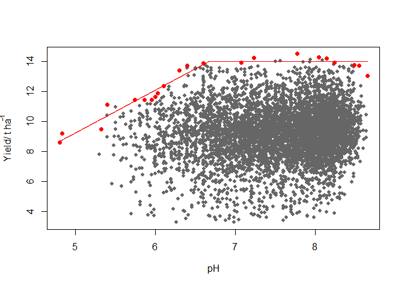

Overview
The BLA R package provides a set of tools to fit boundary line models to a data set as proposed by Webb (1972). It includes a suite of methods which have been introduced since the original manually-drawn boundary lines were proposed. These include methods based on binning the independent variable, the BOLIDES algorithm of Schug et al. (1995), quantile regression and the censored bivariate normal model of Milne et al. (2006). It also provides data exploration methods to check for outliers and to provide initial evidence for a limiting boundary in data sets as initial steps before doing boundary line analysis. It includes functions to determine suitable starting values for boundary line parameters for estimation by numerical optimization procedures. Learn more in vignette("Introduction_to_BLA").
How can I install the package?
Install the current version of the package from CRAN.
install.packages("BLA")What can I use the BLA package for?
The classical situation in which BLA is used is to model the relationship between some response variable for a biological system (e.g. the yield of a crop) and a variable which is potentially limiting on that response (e.g. soil pH). The approach is suitable for large data sets from surveys i.e. cases in which multiple potential limiting factors occur but are not controlled experimentally. In the example of crop yield and pH, one can determine the largest expected yield for a given pH value, also called the boundary pH value. There are various methods to fit the boundary model in the BLA package, encoded in the functions blbin(), bolides(), blqr() and cbvn(). The example below uses the bolides() function:
library(BLA)
library(aplpack)# provides function for outlier detection
# 1. Outlier detection using bagplot() function
nobs<-length(soil$pH)
vals_ur<-matrix(NA,nobs,2)# create a matrix: bagplot inputs data as a matrix
vals_ur[,1]<-soil$pH
vals_ur[,2]<-soil$yield
bag<-bagplot(vals_ur,create.plot = F ) # bagplot identifies outliers
vals<-rbind(bag$pxy.bag,bag$pxy.outer) # new excludes bivariate outliers
# 2. Fit the boundary model in form of a linear plateau ("lp")
x<-vals[,1]
y<-vals[,2]
start =c(-12.99,2,13 ) # initial start values for optimization
model<-bolides(x,y, start = start,model = "lp",xlab=expression("pH"),
ylab=expression("Yield/ t ha"^-1), pch=16, plot=TRUE,
col="grey40", cex=0.8)
model
#> $Model
#> [1] "lp"
#>
#> $Equation
#> [1] y = min (β₁ + β₂x, β₀)
#>
#> $Parameters
#> Estimate
#> β₁ -4.981956
#> β₂ 2.847364
#> β₀ 14.011192
#>
#> $RMS
#> [1] 0.1733124The boundary yield given the pH for each farm can be predicted using the function predictBL() :
pH_values<-soil$pH
pH_values[which(is.na(x)==T)]<-mean(x,na.rm=T) # replace missing values with mean of pH
predicted_yield<-predictBL(model,pH_values)
head(predicted_yield) # predicted yield for the first six farms
#> [1] 13.98149 14.01119 14.01119 13.07033 14.01119 13.63981The critical pH value can be determined from the model parameters. The critical pH is the pH beyond which yield increase response is not expected.
intercept<-model$Parameters[1]
slope<-model$Parameters[2]
plateau<-model$Parameters[3]
critical_pH<- (plateau-intercept)/slope
print(critical_pH)
#> [1] 6.670432Other boundary line post-hoc analysis procedures can be conducted. For more information, See vignette("Censored_bivariate_normal_model") and vignette("Introduction_to_BLA").
References
Milne, A. E., Wheeler, H. C., & Lark, R. M. (2006). On testing biological data for the presence of a boundary. Annals of Applied Biology, 149 , 213-222. https://doi.org/10.1111/j.1744-7348.2006.00085.x
Schnug, E., Heym, J. M., & Murphy, D. P. L. (1995). Boundary line determination technique (bolides). In P. C. Robert, R. H. Rust, & W. E. Larson (Eds.), site specific management for agricultural systems (p. 899-908). Wiley Online Library. https://doi.org/10.2134/1995.site-specificmanagement.c66
Webb, R. A. (1972). Use of the boundary line in analysis of biological data. Journal of Horticultural Science, 47, 309–319. https://doi.org/10.1080/00221589.1972.11514472